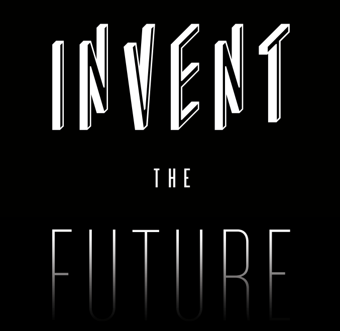

Wednesday 13th November from 1pm
A unique half-day make-a-thon, working with thought leaders and top designers to create innovative solutions for global challenges that affect health.
Who: coders, engineers of all types, life scientists and business builders.
Limited to 50 places. Applications close 9am on the 11th Nov find out if you have a place by by 12:00.
The challenges
Can you predict when someone is getting ill using clever analytics?
Could you diagnose disease in resource poor using simple but clever ideas?
How could we address depression without using drugs?
How can we stop people getting fat using only online services?
Think Healthcare is too hard? Here's a little bit of Inspiration...
Find out how a Cambridge CERN scientist realised that his algorithms could help to solve infertility and made a device to make it happen. Check out how Lift Labs made a cutlery holding device to cancel out the shaking of Parkinson’s patients. See how Omada health are helping to prevent diabetes by encouraging life style changes with just a web app. Scanadu has even made it possible to have a full medical exam with just a hand held device!
Speakers and mentors
These awesome people will guide you in your innovation quest.
Ben Heubl
Medstartr and MedCrunch
Inga Deakin
Healthcare Market analyst, Imperial Innovations
Tori Flower
Creative Director, WeAreWhatWeDo

Awards
The top 2 teams will gain automatic access to the Venture Catalyst Challenge programme which will give you a chance to further develop your ideas with experts over 4 weeks between Feb and March. Then if you want to take it forward after your exams we will help you turn it in to a sucessful business as a grad job.
All other teams that produce a viable solution will receive the Imperial Create Lab award for Innovative Problem Solving.
Venue: Imperial Thinkspace
Created by Imperial Create Lab, hosted by Imperial ThinkSpace